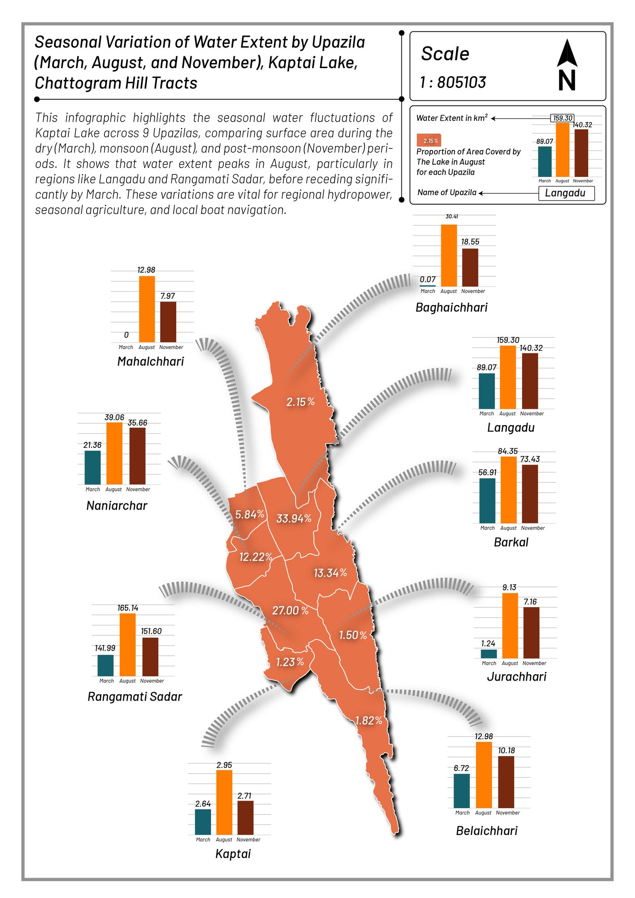
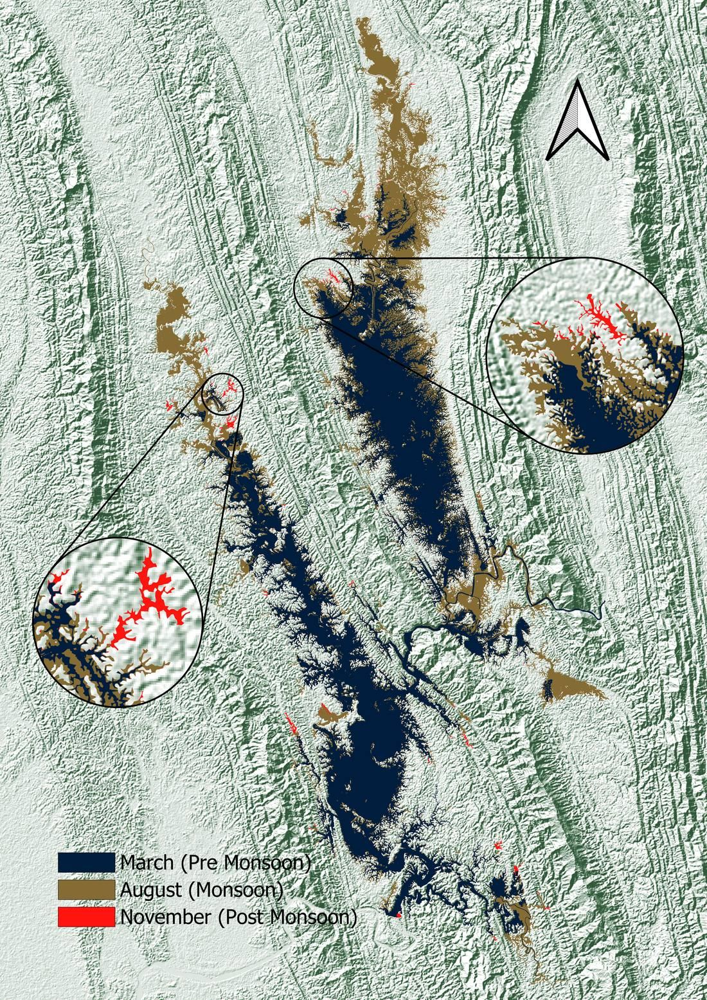
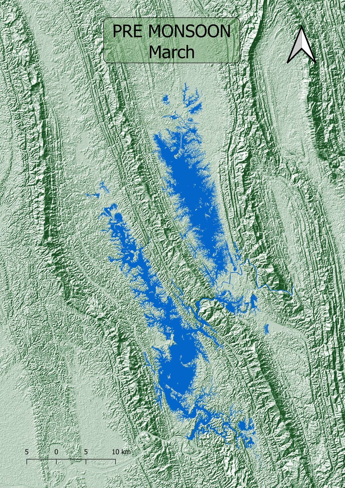
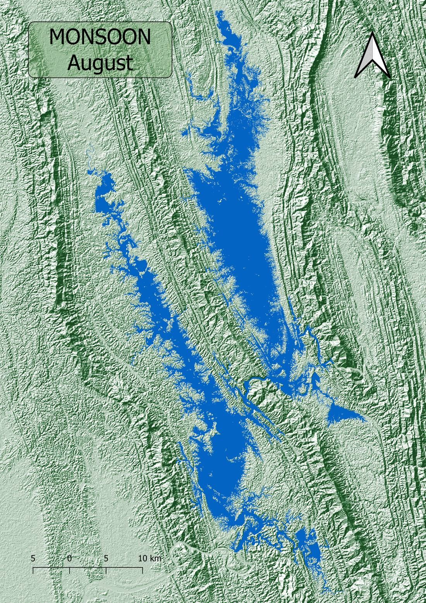
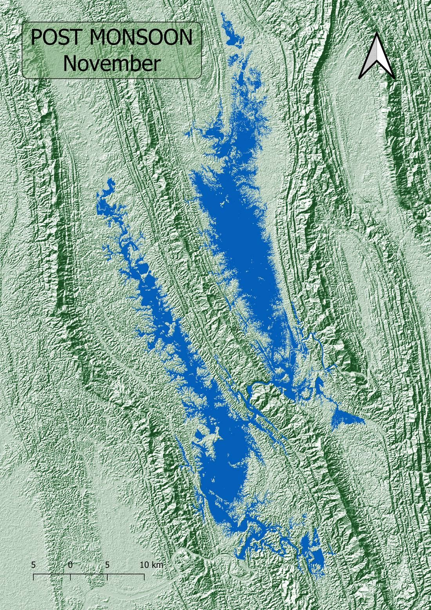

This remote sensing work tracks how surface water extent shifts through the year, comparing pre-monsoon, monsoon, and post-monsoon conditions. The seasonal maps show where water spreads and recedes, giving a clear read on flood timing and water availability.




